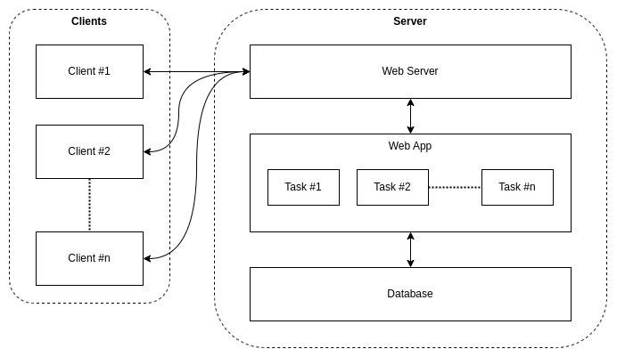

Web Server
Category: Server-Side Software & Hardware
Definition
A Web Server is a computer system that stores website files and delivers them to users over the Internet via the HTTP protocol. It can refer to the physical hardware or the software (like Apache or Nginx) that handles the requests.
How it Responds
When a browser requests a file, the server searches its storage for that specific URL. It then sends the file back with an HTTP response code (like 200 OK for success or 404 Not Found for errors).

Static vs. Dynamic Hosting
- Static: The server sends the file exactly as it is stored (e.g., a simple HTML page).
- Dynamic: The server uses a "Logic Tier" (as seen in N-Tier architecture) to generate a unique page for the user before sending it back.